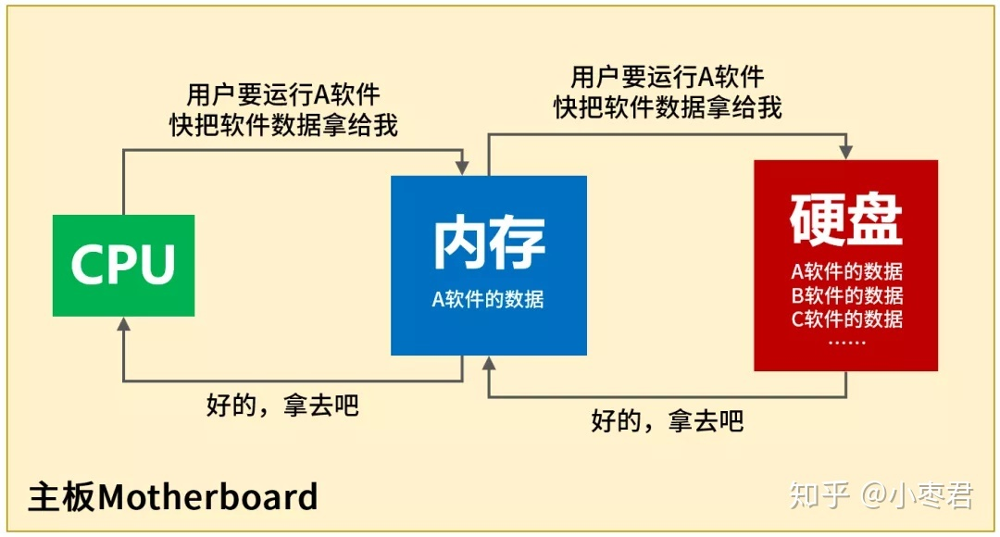
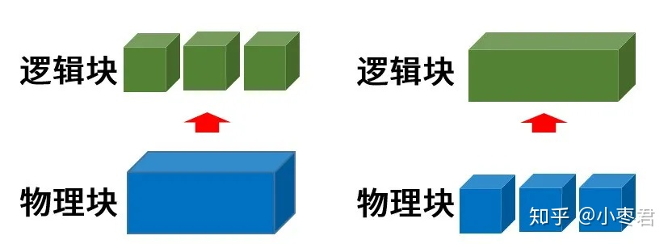
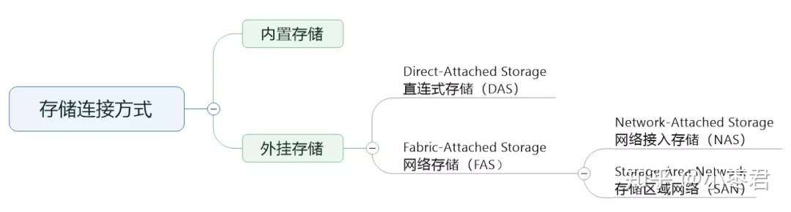
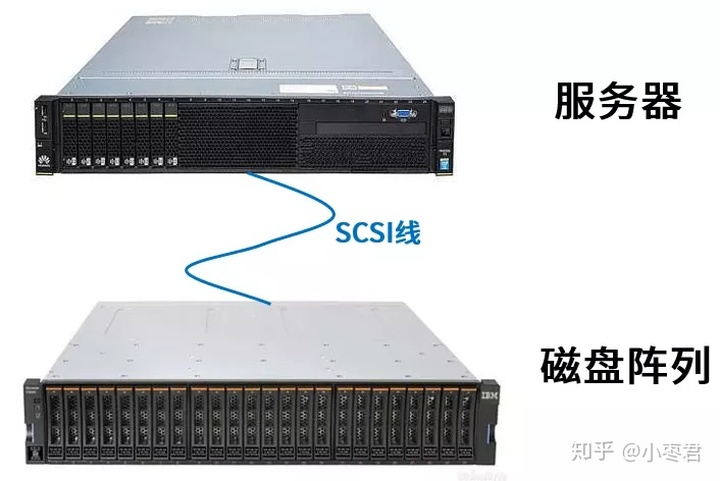
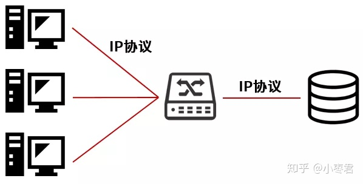
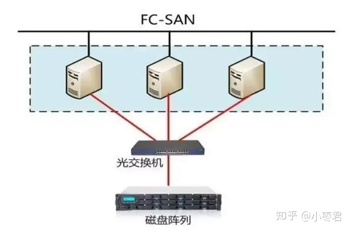
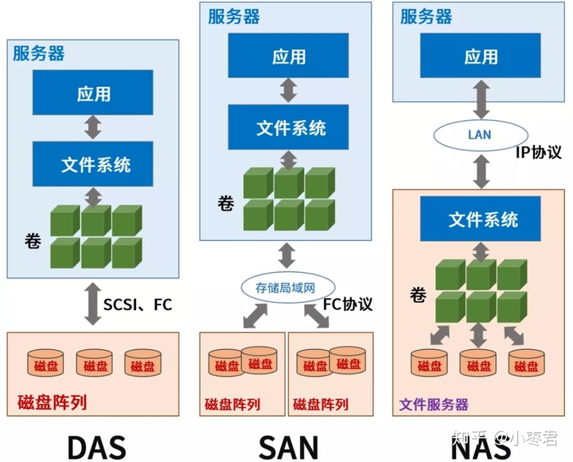
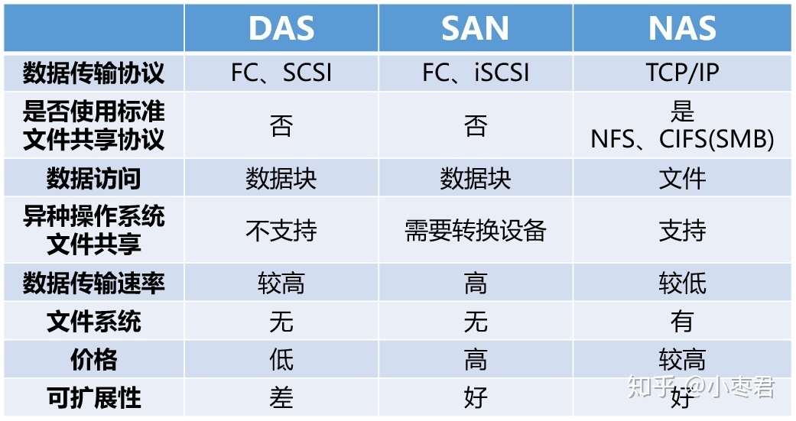
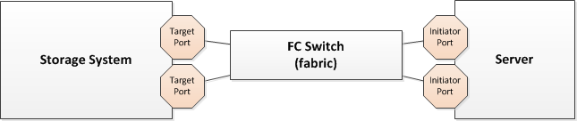

<!DOCTYPE html>
<html lang="en">

<head>
  <meta charset="utf-8" />
   
  <meta name="keywords" content="生活,旅行,思考,代码,博客" />
   
  <meta name="description" content="一座孤岛" />
  
  <meta name="viewport" content="width=device-width, initial-scale=1, maximum-scale=1" />
  <title>
    存储知识点笔记 |  akaQin&#39;s Blog
  </title>
  <meta name="generator" content="hexo-theme-yilia-plus">
  
  <link rel="shortcut icon" href="/favicon.ico" />
  
  
<link rel="stylesheet" href="/css/style.css">

  
<script src="/js/pace.min.js"></script>


  

  

<link rel="alternate" href="/atom.xml" title="akaQin's Blog" type="application/atom+xml">
</head>

</html>

<body>
  <div id="app">
    <main class="content">
      <section class="outer">
  <article id="post-存储知识点笔记" class="article article-type-post" itemscope
  itemprop="blogPost" data-scroll-reveal>

  <div class="article-inner">
    
    <header class="article-header">
       
<h1 class="article-title sea-center" style="border-left:0" itemprop="name">
  存储知识点笔记
</h1>
  

    </header>
    

    
    <div class="article-meta">
      <a href="/2021/07/07/%E5%AD%98%E5%82%A8%E7%9F%A5%E8%AF%86%E7%82%B9%E7%AC%94%E8%AE%B0/" class="article-date">
  <time datetime="2021-07-07T01:35:03.000Z" itemprop="datePublished">2021-07-07</time>
</a>
      
  <div class="article-category">
    <a class="article-category-link" href="/categories/%E7%9F%A5%E8%AF%86%E7%82%B9%E6%80%BB%E7%BB%93/">知识点总结</a>
  </div>

      
      
<div class="word_count">
    <span class="post-time">
        <span class="post-meta-item-icon">
            <i class="ri-quill-pen-line"></i>
            <span class="post-meta-item-text"> 字数统计:</span>
            <span class="post-count">2.3k字</span>
        </span>
    </span>

    <span class="post-time">
        &nbsp; | &nbsp;
        <span class="post-meta-item-icon">
            <i class="ri-book-open-line"></i>
            <span class="post-meta-item-text"> 阅读时长≈</span>
            <span class="post-count">9分钟</span>
        </span>
    </span>
</div>

      
    </div>
    

    
    
    <div class="tocbot"></div>


    

    
    <div class="article-entry" itemprop="articleBody">
      


      

      
      <h1 id="存储知识点笔记"><a href="#存储知识点笔记" class="headerlink" title="存储知识点笔记"></a>存储知识点笔记</h1><h2 id="1-数据存储的载体——硬盘"><a href="#1-数据存储的载体——硬盘" class="headerlink" title="1 数据存储的载体——硬盘"></a>1 数据存储的载体——硬盘</h2><p>硬盘之所以叫硬盘，是因为它的核心部分是一块或多块由坚硬金属材料制成的盘片。盘片上面涂抹了磁性介质，两面都可以记录信息。在盘面上读/写数据的，是磁头。</p>
<p></p>
<p>现在主流的硬盘，扇区密度是一致的，也就是说，越靠外侧，扇区数越多。每个扇区的大小是4K字节，用一个逻辑块编号寻址（LBA，Logical Block Addressing）。以扇区为基础，一个或多个连续的扇区组成一个块，叫做物理块。所以，硬盘往往又叫块设备（Block Device）。</p>
<p>为了方便管理，我们可以将硬盘这样的物理块设备，分割成多个逻辑块设备。或者，我们也可以将多个物理块设备，组合成一个容量更大的逻辑块设备。<br></p>
<h2 id="2-什么是DAS-NAS-SAN"><a href="#2-什么是DAS-NAS-SAN" class="headerlink" title="2. 什么是DAS/NAS/SAN"></a>2. 什么是DAS/NAS/SAN</h2><p>外挂存储分为两种，一种是 <strong>直连式存储（DAS，Direct Attached Storage）</strong> ，还有一种是 <strong>网络存储（FAS，Fabric Attached Storage）</strong> 。<br></p>
<h3 id="2-1-DAS"><a href="#2-1-DAS" class="headerlink" title="2.1 DAS"></a>2.1 DAS</h3><p>DAS直连式存储，一般是使用专用线缆（例如SCSI），与存储设备（例如磁盘阵列）进行直连。<br></p>
<p>虽然数据存储设备看似在外部，但直接挂接在服务器内部总线上，是整个服务器结构的一部分。</p>
<p>DAS的缺点是存储设备只能连接到一台主机使用，无法共享，成本较高，且安全性可靠性较低。</p>
<h3 id="2-2-NAS"><a href="#2-2-NAS" class="headerlink" title="2.2 NAS"></a>2.2 NAS</h3><p><strong>NAS</strong>: NETWORK ATTACHED STORAGE  网络附加存储</p>
<p></p>
<p>NAS与DAS相比，最大的特点是非直连。它可以通过IP网络，实现多台主机与存储设备之间的连接。</p>
<p>NAS大大提高了存储的安全性、共享性和成本。但是I/O（输入输出）渐渐成为性能瓶颈。随着应用服务器的不断增加，网络系统效率会急剧下降。而SAN并不存在这个问题。</p>
<h3 id="2-3-SAN"><a href="#2-3-SAN" class="headerlink" title="2.3 SAN"></a>2.3 SAN</h3><p><strong>SAN</strong>: STORAGE AREA NETWORK    存储区域网络</p>
<p>SAN是一种传输协议,它比NAS更低层面上存储技术,它并不关心通道上传输的是哪种操作系统.<br>SAN是关联存储设备和服务器的网络，它和以太网有类似的架构。</p>
<h3 id="2-3-1-FC-SAN"><a href="#2-3-1-FC-SAN" class="headerlink" title="2.3.1 FC SAN"></a>2.3.1 FC SAN</h3><p><code>FC SAN</code>是采用光纤信道的SAN，也就是服务器透过光纤信道卡（FC HBA），连接光纤交换器（FC Switch），再连接后端的存储设备。<br><code>FC SAN</code>是按块协议(Block Protocal)的传输方式,所以传输速度快,但是造价比较贵,随着客户端的数量增加,造价也随着上升;所以一般在大型网络的核心上都采用的<code>FC SAN</code>的存储结构; </p>
<p></p>
<p>早期的SAN架构专指FC SAN，它通过专用光纤通道交换机访问数据，采用FC协议。FC（光纤通道）的带宽明显高于NAS的以太网，而且稳定性也更好。</p>
<h3 id="2-3-2-IP-SAN"><a href="#2-3-2-IP-SAN" class="headerlink" title="2.3.2 IP SAN"></a>2.3.2 IP SAN</h3><p>后来，有了iSCSI协议（Internet SCSI，2003年正式成为标准）并且主流操作系统开始支持，就有了IP SAN（使用IP网络和设备）。</p>
<p>随着以太网技术的发展,使IP SAN对SAN技术进一步的拓展, IP SAN降低了<code>FC SAN</code>的光纤造价.直接在IP网络上进行存储..而且实施起来更容易.<br><code>IP SAN</code>和<code>FC SAN</code>一样,都是按块协议(Block Protocal) 的传输方式;<br>。</p>
<p>说白了，iSCSI就是走IP网络的SCSI，也叫<strong>IP SAN</strong>。一方面扩大了连接距离，另一方面增加了连接的服务器数量（原来的SCSI-3的上限是15）。</p>
<h3 id="2-4-NAS-与-SAN-的对比"><a href="#2-4-NAS-与-SAN-的对比" class="headerlink" title="2.4 NAS 与 SAN 的对比"></a>2.4 NAS 与 SAN 的对比</h3><p><br></p>
<ul>
<li>NAS的成本比SAN低很多。前端只使用以太网接口即可，FC适配卡以及交换机的成本相对以太网卡和交换机来说非常高的。</li>
<li>NAS可以解决主机服务器上的CPU和内存资源。NAS适用于cpu密集的应用环境，对于大块顺序IO密集的环境，要比SAN慢一大截。</li>
<li>NAS由于利用了以太网，所以可扩展性很强，且容易部署。</li>
<li>NAS一般使用NFS或CIFS访问协议，而SAN是FC或iSCSI</li>
<li>NAS可以在一台盘阵上实现多台客户端的共享访问，包括同时访问某个目录或文件。而SAN方式下，除非所有的客户端都安装了专门的集群管理软件，否则不能将某个lun共享，强制共享会损坏数据。</li>
</ul>
<h2 id="3-网卡"><a href="#3-网卡" class="headerlink" title="3. 网卡"></a>3. 网卡</h2><p>网卡是大家常提到的一个类型设备的总称，是指安装在主机里，通过网络连接线（双绞线、光纤线缆、同轴电缆等）与网络交换机（以太网交换机、FC交换机、ISCSI交换机等）、或与其它网络设备（存储设备、服务器、工作站等）连接，从而形成一个网络的硬件设备。因传输协议的不同的，网卡可分为三种，一是以太网卡，二是FC网卡，三是ISCSI网卡。</p>
<h3 id="3-1-以太网卡"><a href="#3-1-以太网卡" class="headerlink" title="3.1 以太网卡"></a>3.1 以太网卡</h3><p>以太网卡：学名Ethernet Adapter,传输协议为IP协议,一般通过光纤线缆或双绞线与以太网交换机连接。接口类型分为光口和电口。光口一般都是通过光纤线缆来进行数据传输，接口模块一般为SFP（传输率2Gb/s）和GBIC（1Gb/s）,对应的接口为SC、ST和LC。电口目前常用接口类型为<strong>RJ45</strong>,用来与双绞线连接，也有与同轴电缆连接的接口，不过现在已经用的比较少了。</p>
<h3 id="3-2-光纤网卡"><a href="#3-2-光纤网卡" class="headerlink" title="3.2 光纤网卡"></a>3.2 光纤网卡</h3><p>光纤网卡，也叫FC网卡，学名Fibre Channel HBA。传输协议为光纤通道协议，一般通过光纤线缆与光纤通道交换机连接。接口类型分为光口和电口。光口一般都是通过光纤线缆来进行数据传输，接口模块一般为SFP（传输率2Gb/s）和GBIC（1Gb/s）,对应的接口为SC和LC。电口的接口类型一般为DB9针或HSSDC。</p>
<p><strong>HBA</strong></p>
<p>HBA物理上你可以把它当作网卡一样插在PCI或者PCI-E槽位里。HBA卡有FC-HBA和iSCSI HBA将来还有其他HBA卡，有的iSCSI HBA卡就可以当作普通网卡来用当然有点奢侈了，FC－HBA就只能连接FC－Switch了。</p>
<h3 id="3-3-iSCSI网卡"><a href="#3-3-iSCSI网卡" class="headerlink" title="3.3 iSCSI网卡"></a>3.3 iSCSI网卡</h3><p>ISCSI网卡：学名ISCSI HBA。传输ISCSI协议。接口类型与以太网卡相同</p>
<h2 id="4-其他概念"><a href="#4-其他概念" class="headerlink" title="4. 其他概念"></a>4. 其他概念</h2><p></p>
<p><strong>Initiator</strong> – An initiator is the consumer of storage, typically a server with an adapter card in it called a Host Bus Adapter (HBA).  The initiator “initiates” a connection over the fabric to one or more ports on your storage system which are called target ports.</p>
<p><strong>Target</strong> – Target ports are the ports on your storage system which deliver storage volumes (called target devices or LUNs) to the initiators</p>
<p><strong>WWN</strong> – In Fibre Channel there’s a special term for a port identifier, specifically WWN or World Wide Name.  Just as every network card as a unique MAC address for each NIC port, every single FC port has a unique 64bit port WWN.  For example, a FC port WWN might look like this: 20:00:00:81:23:45:ac:01 and though I’ve used the colon (:) as a separator/delimiter it’s just as common to see the 16 hex digits separated by hyphens (-).</p>
<p>All FC devices have a unique identity that is called a worldwide name (WWN). This identification can be compared with Ethernet cards and MAC addresses. Each Node Port has its own WWN, but it is also possible for a device with more than one Fibre Channel adapted to have its own WWN as well. <strong>WWN is 64-bit address, and if two WWN addresses are put into the frame header, this leave 16 bytes of data just for identyfying the destination and source address.</strong> So 64-bit addresses can affect routing performance. Each device in the SAN is identified by a unique WWN. The WWN contains vendor identifier field, which is defined and maintened by the IEEE.</p>
<p><strong>WWNN vs WWPN</strong></p>
<p>A worldwide node name (WWNN) is a globally unique 64-bit identifier that is assigned to each Fibre Channel node or device. For servers and hosts, WWNN is unique for each HBA (host bus adapter), and in a case of a server with two HBAs, they have two WWNNs. For a SAN switch, the WWNN is a common for the chassis. For storage, the WWNN is common for each controller unit of midrage storage. In case of high-end enterprise storage, the WWNN is unique for the entire array.</p>
<p>A worldwide port number (WWPN) is unique identifier for each FC port of any Fibre Channel device. For server, we have a WWPN for each port of the HBA. For a SAN switch, the WWPN is available for each port in the chassis. For Storage, each host port has an individual WWPN.</p>
<p><strong>Zoning</strong></p>
<p>So to keep those chatty initiators from communicating with all the target ports on your fabric you’ve got to put them into what are called zones, and that’s the heart of it all. Fabric management is all about restricting access to groups of initiator and target ports through zoning.</p>
<p>A zone is simply a list of IDs containing an initiator port ID and one or more target port IDs.  It’s like setting up virtual cabling or paths so that there’s a data path from the initiators to the targets.  Delete the zone for a given group and those paths which that zone allowed are deleted and the associated traffic for those paths stops.  If no zones exist, no traffic is allowed to flow through the fabric.</p>
<blockquote>
<p>存储科普 <a href="https://www.zhihu.com/search?q=%E5%B0%8F%E6%9E%A3%E5%90%9B%20%E5%AD%98%E5%82%A8&amp;utm_content=search_history&amp;type=content" target="_blank" rel="noopener">https://www.zhihu.com/search?q=%E5%B0%8F%E6%9E%A3%E5%90%9B%20%E5%AD%98%E5%82%A8&amp;utm_content=search_history&amp;type=content</a><br>Block Storage <a href="https://www.ibm.com/cloud/learn/block-storage#toc-what-is-bl-FugUvNFG" target="_blank" rel="noopener">https://www.ibm.com/cloud/learn/block-storage#toc-what-is-bl-FugUvNFG</a><br>SAN 和 NAS <a href="https://www.cnblogs.com/shijingxiang/articles/4444090.html" target="_blank" rel="noopener">https://www.cnblogs.com/shijingxiang/articles/4444090.html</a><br>FC <a href="https://blog.osnexus.com/2012/03/20/understanding-fc-fabric-configuration-5-paragraphs/" target="_blank" rel="noopener">https://blog.osnexus.com/2012/03/20/understanding-fc-fabric-configuration-5-paragraphs/</a><br>HBA网卡 <a href="https://zhuanlan.zhihu.com/p/30799016" target="_blank" rel="noopener">https://zhuanlan.zhihu.com/p/30799016</a><br>Fibire <a href="https://www.storagefreak.net/2014/10/fibre-channel-addressing" target="_blank" rel="noopener">https://www.storagefreak.net/2014/10/fibre-channel-addressing</a></p>
</blockquote>

      
      <!-- reward -->
      
      <div id="reward-btn">
        打赏
      </div>
      
    </div>
    

      <!-- copyright -->
      
        <div class="declare">
          <ul class="post-copyright">
            <li>
              <i class="ri-copyright-line"></i>
              <strong>版权声明： </strong s>
              本博客所有文章除特别声明外，均采用 <a href="https://www.apache.org/licenses/LICENSE-2.0.html" rel="external nofollow"
                target="_blank">Apache License 2.0</a> 许可协议。转载请注明出处！
            </li>
          </ul>
        </div>
        
    <footer class="article-footer">
      
          
<div class="share-btn">
      <span class="share-sns share-outer">
        <i class="ri-share-forward-line"></i>
        分享
      </span>
      <div class="share-wrap">
        <i class="arrow"></i>
        <div class="share-icons">
          
          <a class="weibo share-sns" href="javascript:;" data-type="weibo">
            <i class="ri-weibo-fill"></i>
          </a>
          <a class="weixin share-sns wxFab" href="javascript:;" data-type="weixin">
            <i class="ri-wechat-fill"></i>
          </a>
          <a class="qq share-sns" href="javascript:;" data-type="qq">
            <i class="ri-qq-fill"></i>
          </a>
          <a class="douban share-sns" href="javascript:;" data-type="douban">
            <i class="ri-douban-line"></i>
          </a>
          <!-- <a class="qzone share-sns" href="javascript:;" data-type="qzone">
            <i class="icon icon-qzone"></i>
          </a> -->
          
          <a class="facebook share-sns" href="javascript:;" data-type="facebook">
            <i class="ri-facebook-circle-fill"></i>
          </a>
          <a class="twitter share-sns" href="javascript:;" data-type="twitter">
            <i class="ri-twitter-fill"></i>
          </a>
          <a class="google share-sns" href="javascript:;" data-type="google">
            <i class="ri-google-fill"></i>
          </a>
        </div>
      </div>
</div>

<div class="wx-share-modal">
    <a class="modal-close" href="javascript:;"><i class="ri-close-circle-line"></i></a>
    <p>扫一扫，分享到微信</p>
    <div class="wx-qrcode">
      
    </div>
</div>

<div id="share-mask"></div>
      
      
  <ul class="article-tag-list" itemprop="keywords"><li class="article-tag-list-item"><a class="article-tag-list-link" href="/tags/storage/" rel="tag">storage</a></li></ul>


    </footer>

  </div>

  
  
  <nav class="article-nav">
    
      <a href="/2021/07/09/%E5%AE%B9%E5%99%A8%E4%BA%91%E5%AF%B9%E6%8E%A5FC-SAN%E5%9D%97%E5%AD%98%E5%82%A8%E5%A4%8D%E7%9B%98%E8%AE%B0%E5%BD%95/" class="article-nav-link">
        <strong class="article-nav-caption">上一篇</strong>
        <div class="article-nav-title">
          
            容器云对接FC SAN块存储复盘记录
          
        </div>
      </a>
    
    
      <a href="/2021/03/22/Pod-%E5%86%85%E5%AD%98%E6%8E%A7%E5%88%B6%E7%BB%84%E6%B3%84%E6%BC%8F%E7%A0%94%E7%A9%B6%E6%8A%A5%E5%91%8A/" class="article-nav-link">
        <strong class="article-nav-caption">下一篇</strong>
        <div class="article-nav-title">Pod 内存控制组泄漏研究报告</div>
      </a>
    
  </nav>


  

  
  
<!-- valine评论 -->
<div id="vcomments-box">
    <div id="vcomments">
    </div>
</div>
<script src="//cdn1.lncld.net/static/js/3.0.4/av-min.js"></script>
<script src='https://cdn.jsdelivr.net/npm/valine@1.3.10/dist/Valine.min.js'></script>
<script>
    new Valine({
        el: '#vcomments',
        app_id: 'X2Yrs2HgM1dBr94LBlfP7Jsj-gzGzoHsz',
        app_key: 'x2WQjNYF5CQseEAN1iSqXOLQ',
        path: window.location.pathname,
        notify: 'true',
        verify: 'false',
        avatar: 'mp',
        placeholder: '给我的文章加点评论吧~',
        recordIP: true
    });
    const infoEle = document.querySelector('#vcomments .info');
    if (infoEle && infoEle.childNodes && infoEle.childNodes.length > 0) {
        infoEle.childNodes.forEach(function (item) {
            item.parentNode.removeChild(item);
        });
    }
</script>
<style>
    #vcomments-box {
        padding: 5px 30px;
    }

    @media screen and (max-width: 800px) {
        #vcomments-box {
            padding: 5px 0px;
        }
    }

    #vcomments-box #vcomments {
        background-color: #fff;
    }

    .v .vlist .vcard .vh {
        padding-right: 20px;
    }

    .v .vlist .vcard {
        padding-left: 10px;
    }
</style>

  

  
  
  

</article>

</section>
      <footer class="footer">
  <div class="outer">
    <ul class="list-inline">
      <li>
        &copy;
        2019-2021
        Aaron Qin
      </li>
      <li>
        
      </li>
    </ul>
    <ul class="list-inline">
      <li>
        
        
        <span>
  <i>PV:<span id="busuanzi_value_page_pv"></span></i>
  <i>UV:<span id="busuanzi_value_site_uv"></span></i>
</span>
        
      </li>
      <li>
        <!-- cnzz统计 -->
        
      </li>
    </ul>
  </div>
</footer>
    <div class="to_top">
        <div class="totop" id="totop">
  <i class="ri-arrow-up-line"></i>
</div>
      </div>
    </main>
      <aside class="sidebar">
        <button class="navbar-toggle"></button>
<nav class="navbar">
  
  <div class="logo">
    <a href="/"></a>
  </div>
  
  <ul class="nav nav-main">
    
    <li class="nav-item">
      <a class="nav-item-link" href="/">主页</a>
    </li>
    
    <li class="nav-item">
      <a class="nav-item-link" href="/archives">归档</a>
    </li>
    
    <li class="nav-item">
      <a class="nav-item-link" href="/categories">分类</a>
    </li>
    
    <li class="nav-item">
      <a class="nav-item-link" href="/tags">标签</a>
    </li>
    
    <li class="nav-item">
      <a class="nav-item-link" href="/about/me">关于我</a>
    </li>
    
  </ul>
</nav>
<nav class="navbar navbar-bottom">
  <ul class="nav">
    <li class="nav-item">
      
      <a class="nav-item-link nav-item-search"  title="Search">
        <i class="ri-search-line"></i>
      </a>
      
      
      <a class="nav-item-link" target="_blank" href="/atom.xml" title="RSS Feed">
        <i class="ri-rss-line"></i>
      </a>
      
    </li>
  </ul>
</nav>
<div class="search-form-wrap">
  <div class="local-search local-search-plugin">
  <input type="search" id="local-search-input" class="local-search-input" placeholder="Search...">
  <div id="local-search-result" class="local-search-result"></div>
</div>
</div>
      </aside>
      <div id="mask"></div>

<!-- #reward -->
<div id="reward">
  <span class="close"><i class="ri-close-line"></i></span>
  <p class="reward-p"><i class="ri-cup-line"></i>请我喝杯咖啡吧~</p>
  <div class="reward-box">
    
    <div class="reward-item">
      
      <span class="reward-type">支付宝</span>
    </div>
    
    
    <div class="reward-item">
      
      <span class="reward-type">微信</span>
    </div>
    
  </div>
</div>
      
<script src="/js/jquery-2.0.3.min.js"></script>


<script src="/js/jquery.justifiedGallery.min.js"></script>


<script src="/js/lazyload.min.js"></script>


<script src="/js/busuanzi-2.3.pure.min.js"></script>


<script src="/js/share.js"></script>


<script src="/fancybox/jquery.fancybox.min.js"></script>


<script src="/js/tocbot.min.js"></script>

<script>
  // Tocbot_v4.7.0  http://tscanlin.github.io/tocbot/
  tocbot.init({
    tocSelector: '.tocbot',
    contentSelector: '.article-entry',
    headingSelector: 'h1, h2, h3, h4, h5, h6',
    hasInnerContainers: true,
    scrollSmooth: true,
    scrollContainer:'main',
    positionFixedSelector: '.tocbot',
    positionFixedClass: 'is-position-fixed',
    fixedSidebarOffset: 'auto',
    onClick: (e) => {
      $('.toc-link').removeClass('is-active-link');
      $(`a[href=${e.target.hash}]`).addClass('is-active-link');
      $(e.target.hash).scrollIntoView();
      return false;
    }
  });
</script>


<script>
  var ayerConfig = {
    mathjax: false
  }
</script>


<script src="/js/ayer.js"></script>


<script src="https://cdn.jsdelivr.net/npm/jquery-modal@0.9.2/jquery.modal.min.js"></script>
<link rel="stylesheet" href="https://cdn.jsdelivr.net/npm/jquery-modal@0.9.2/jquery.modal.min.css">


<!-- Root element of PhotoSwipe. Must have class pswp. -->
<div class="pswp" tabindex="-1" role="dialog" aria-hidden="true">

    <!-- Background of PhotoSwipe. 
         It's a separate element as animating opacity is faster than rgba(). -->
    <div class="pswp__bg"></div>

    <!-- Slides wrapper with overflow:hidden. -->
    <div class="pswp__scroll-wrap">

        <!-- Container that holds slides. 
            PhotoSwipe keeps only 3 of them in the DOM to save memory.
            Don't modify these 3 pswp__item elements, data is added later on. -->
        <div class="pswp__container">
            <div class="pswp__item"></div>
            <div class="pswp__item"></div>
            <div class="pswp__item"></div>
        </div>

        <!-- Default (PhotoSwipeUI_Default) interface on top of sliding area. Can be changed. -->
        <div class="pswp__ui pswp__ui--hidden">

            <div class="pswp__top-bar">

                <!--  Controls are self-explanatory. Order can be changed. -->

                <div class="pswp__counter"></div>

                <button class="pswp__button pswp__button--close" title="Close (Esc)"></button>

                <button class="pswp__button pswp__button--share" style="display:none" title="Share"></button>

                <button class="pswp__button pswp__button--fs" title="Toggle fullscreen"></button>

                <button class="pswp__button pswp__button--zoom" title="Zoom in/out"></button>

                <!-- Preloader demo http://codepen.io/dimsemenov/pen/yyBWoR -->
                <!-- element will get class pswp__preloader--active when preloader is running -->
                <div class="pswp__preloader">
                    <div class="pswp__preloader__icn">
                        <div class="pswp__preloader__cut">
                            <div class="pswp__preloader__donut"></div>
                        </div>
                    </div>
                </div>
            </div>

            <div class="pswp__share-modal pswp__share-modal--hidden pswp__single-tap">
                <div class="pswp__share-tooltip"></div>
            </div>

            <button class="pswp__button pswp__button--arrow--left" title="Previous (arrow left)">
            </button>

            <button class="pswp__button pswp__button--arrow--right" title="Next (arrow right)">
            </button>

            <div class="pswp__caption">
                <div class="pswp__caption__center"></div>
            </div>

        </div>

    </div>

</div>

<link rel="stylesheet" href="https://cdn.jsdelivr.net/npm/photoswipe@4.1.3/dist/photoswipe.min.css">
<link rel="stylesheet" href="https://cdn.jsdelivr.net/npm/photoswipe@4.1.3/dist/default-skin/default-skin.css">
<script src="https://cdn.jsdelivr.net/npm/photoswipe@4.1.3/dist/photoswipe.min.js"></script>
<script src="https://cdn.jsdelivr.net/npm/photoswipe@4.1.3/dist/photoswipe-ui-default.min.js"></script>

<script>
    function viewer_init() {
        let pswpElement = document.querySelectorAll('.pswp')[0];
        let $imgArr = document.querySelectorAll(('.article-entry img:not(.reward-img)'))

        $imgArr.forEach(($em, i) => {
            $em.onclick = () => {
                // slider展开状态
                // todo: 这样不好，后面改成状态
                if (document.querySelector('.left-col.show')) return
                let items = []
                $imgArr.forEach(($em2, i2) => {
                    let img = $em2.getAttribute('data-idx', i2)
                    let src = $em2.getAttribute('data-target') || $em2.getAttribute('src')
                    let title = $em2.getAttribute('alt')
                    // 获得原图尺寸
                    const image = new Image()
                    image.src = src
                    items.push({
                        src: src,
                        w: image.width || $em2.width,
                        h: image.height || $em2.height,
                        title: title
                    })
                })
                var gallery = new PhotoSwipe(pswpElement, PhotoSwipeUI_Default, items, {
                    index: parseInt(i)
                });
                gallery.init()
            }
        })
    }
    viewer_init()
</script>


<script type="text/javascript" src="https://js.users.51.la/20544303.js"></script>
  </div>
</body>

</html>